Tools for working with AI agents and reading arguments, plus research and reference works: a Byzantine atlas, a medical evidence map and two evidence checks.
Zone 1
AI tools and experiments
Small tools that put AI reasoning on display.
R-0101 / 10Native Mac app · Developer tool
BLACKBOX
agent recorder
A flight recorder for AI coding agents. It captures what Claude Code actually did, prompts, tool calls, file edits, failures and subagent handoffs, and lets you replay a session, trace a file change back to the agent that made it, and see how a failure was recovered. Nothing leaves the Mac.
The flight recorder. Every track of a session on one timeline, played back at up to 20x, with the inspector showing what led to a failed test and what came next.
The problem
AI coding agents now run for long stretches, start subagents and edit dozens of files. When something breaks, the only record is a scrolling transcript. There is no way to see the session as a whole, ask which agent changed a file, or tell what was observed from what someone guessed afterward.
What it does
Capture, local only: opt-in hooks and transcript import into a local database, with privacy levels and redaction.
Replay on a single timeline, with an inspector that links each event to its cause and result.
File forensics, agent topology and a failure observatory that groups repeated failures and reconstructs recovery.
A safe installer that shows a line-by-line diff of the Claude settings file and backs it up before changing anything.
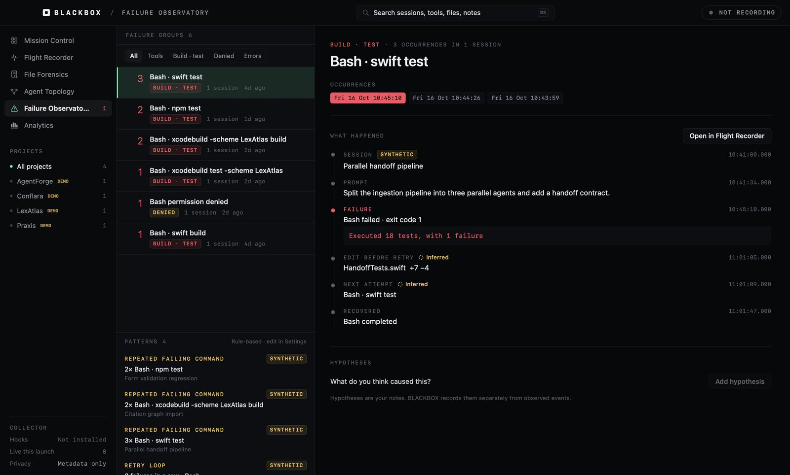
The failure observatory. Observed events and inferred steps are marked differently, and your own hypotheses are kept apart from both.
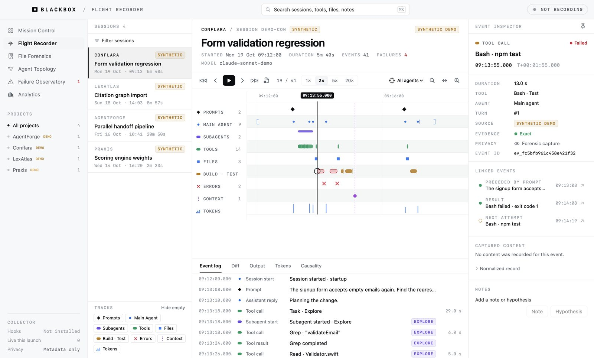
The same recorder in a white skin. Nine skins are available, chosen in Settings rather than in the working screens.
How it was built
A native macOS app in SwiftUI over SQLite with full-text search. I wrote the specification package and asked for it to be as sleek as a flight instrument; Claude Code built the app, the hook relay and the synthetic sessions, and ran the builds on my Mac through Remote Control.
R-0202 / 10Native Mac app · Local AI
AgentForge
local AI agents
Change here for Prism Trip on the Design line. Prism Trip also runs natively inside AgentForge, as a tab in its ASCII Studio.
A Mac app for running AI agents on models that live on your own computer. You point an agent at a project folder, choose how much it may touch, and approve each change. It also covers chat, chat with your documents and visual agent workflows, all inside a retro terminal look built from text characters.
Download for MacSigned, notarized and self-updating. Needs Ollama, which the first-run setup installs.
Lines of Swift
10,442
Pages
19
Agent harnesses
3
Automated checks
32
Releases shipped
4
Cloud accounts required
0
Mission Control. The bar across the top tracks processor, graphics, memory, disk, network, temperature and battery in real time.
What it does
Agents on your own models
A built-in agent lists, reads, searches, writes and edits files and runs commands, using a model running locally through Ollama. Access is chosen per session: read only, ask before each change, or auto-approve edits. Every change is checkpointed and can be undone.
Three harnesses
The same launcher also drives Claude Code and Codex, either on the user's own cloud account or pointed at a local model. Skills and MCP tools plug in, and a timed-out run can be continued, with the agent told which files the last attempt already changed.
Model Lab
Grades each installed model on whether it can drive an agent: does it make real tool calls, how fast does it write, and how long does it take to wake. The agent picker defaults to the best-graded model.
Flows
A drag-and-drop canvas for wiring agents, prompts, routers, human approval gates and shell steps into a workflow, with zoom, fit, a minimap and ten starter templates. One template has an agent edit AgentForge itself, rebuild it and relaunch it.
Library
Chat with your own documents. PDFs, Word files and code are split up and indexed with a local embedding model, and answers cite the passage they came from. Agents can search the library too.
The fun parts
Idea Forge, a slot machine that rolls a project idea; ASCII Studio with effects and 24 animated creatures; Sprite Lab, where a model can draw a sprite from a prompt; a music visualizer; and an Agent Theater where running agents appear as characters.
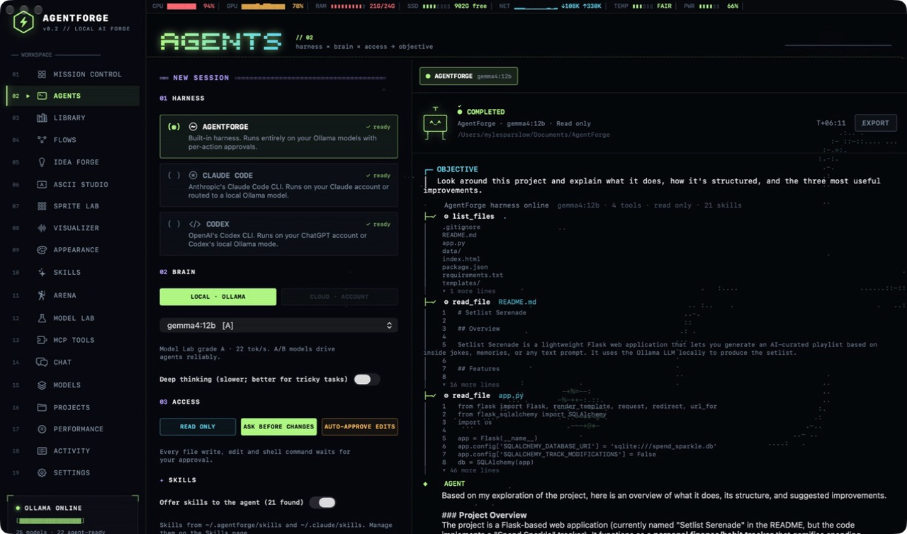
A real read-only run on gemma4:12b: the agent lists the folder, reads the README and the code, then explains the project. It took about six minutes on a base M2.
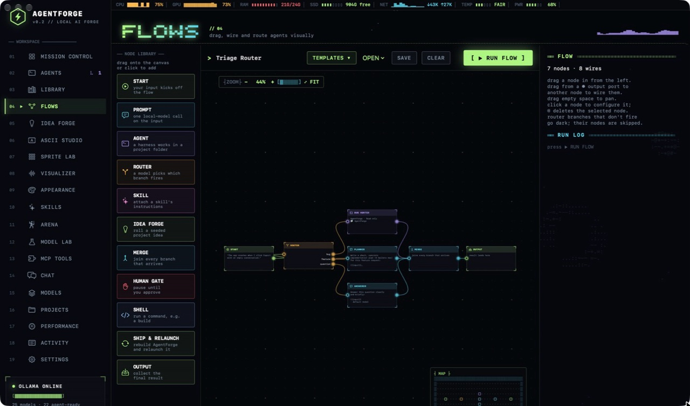
Flows: a router sends a request to a bug-hunting agent, a planner or an answerer.
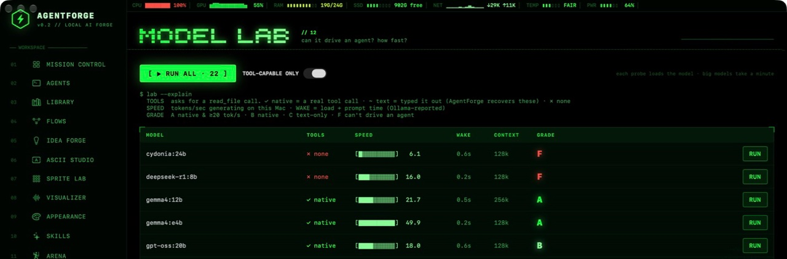
Model Lab: which local models can actually drive an agent.
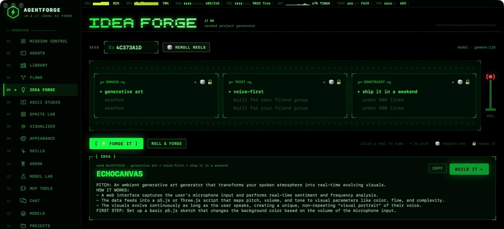
Idea Forge: lock or edit the reels, pull the lever, and a local model writes the pitch.
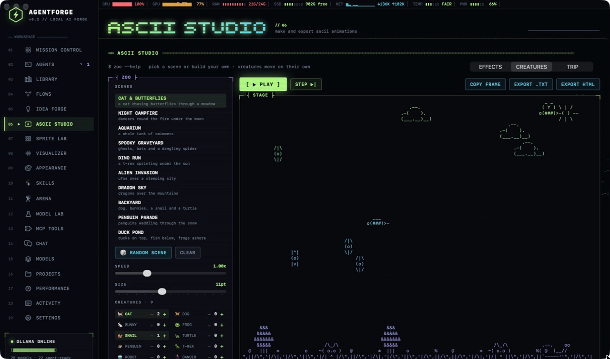
ASCII Studio: creatures move around a scene on their own.
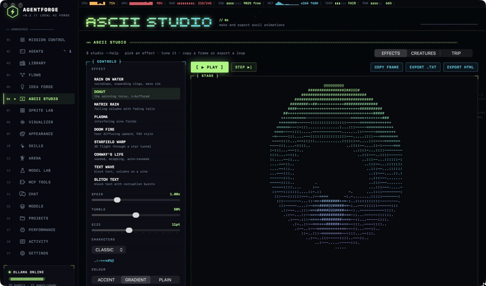
The spinning donut, one of nine text effects you can export.
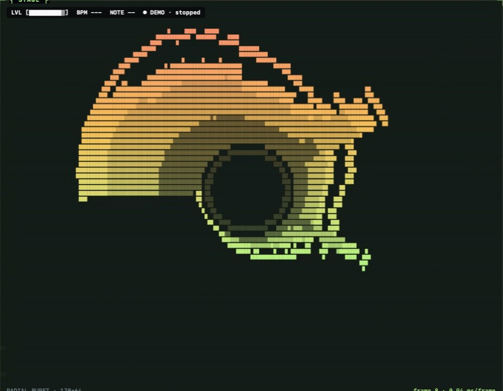
Music visualizer, radial burst mode. It listens to the mic or the Mac's own audio.
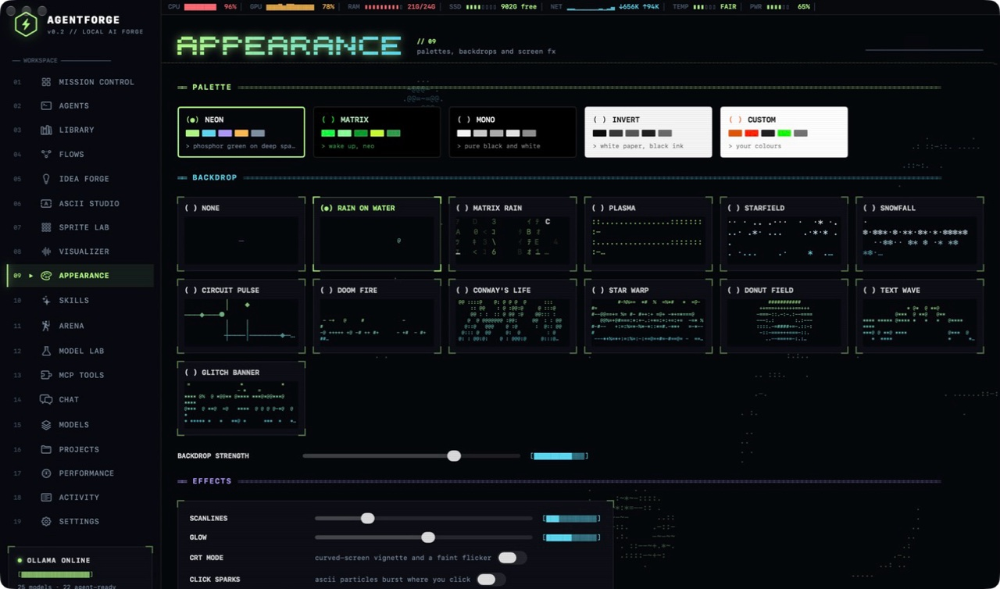
Appearance: five palettes, thirteen animated backdrops and screen effects.
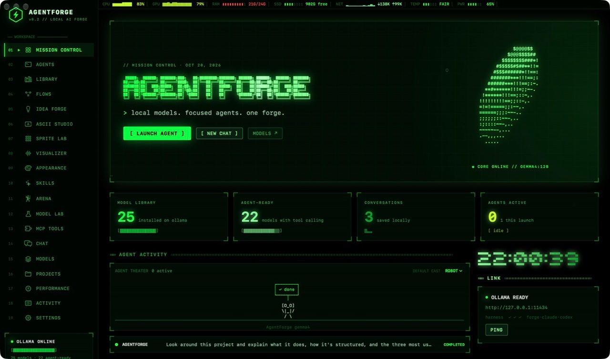
The same dashboard in the Matrix palette, after an agent finished.
Making small local models usable as agents
Local models fail as agents in quiet ways. Some write a tool call as text instead of making it, some announce the next step and then stop, and some repeat the same action forever. The harness recovers tool calls written as text, nudges a model that promised an action it did not take, redirects and then stops repeat loops, and frees memory and reloads the model onto the graphics chip before a long run. Model Lab measures which models need this help, so the default is one that does not.
How it was built
Built with Claude Code as a native SwiftUI app with no third-party code apart from the Sparkle updater. Every animation is plain text redrawn by a capped clock, and everything pauses when the window is in the background. Releases are signed with my Apple Developer ID, notarized by Apple and served from a Cloudflare Worker that also hosts the update feed. A feedback button attaches diagnostics and recent crash reports, with personal paths removed.
R-0303 / 10Desktop app for Mac, Windows and Linux · Local AI
AgentForge Rust Edition
cross-platform agents
AgentForge rebuilt in Rust so it runs on Mac, Windows and Linux, reskinned in rusted iron and forge orange. It carries every feature of the Mac app, then adds cloud models, an image studio, a cost tracker, one queue for every approval, and visualizers simulated in Rust that react to whatever the computer is playing.
Mission Control in the RUST palette, with the Forge Sparks background and today's model spend next to the usual counts.
What changed from the Mac app
Three operating systems
A Rust backend (Tauri) with a Svelte interface replaces SwiftUI. Agents, file tools, Ollama, MCP servers, document search and hardware readings all run in Rust, so they behave the same on Mac, Windows and Linux. A first-run setup finds Ollama or walks through installing it on each one.
Cloud models and images
Local models stay the default, but chat and agents can also use OpenAI, Anthropic, Gemini, DeepSeek, Kimi, Mistral, Groq, xAI, OpenRouter or any OpenAI-compatible server. Keys stay in the system keychain, and a notice appears whenever text is about to leave the computer. Image Studio generates and edits pictures, also from chat with /image.
Cost and approvals
Every model call is logged with its tokens and cost: the provider's own figure when it reports one, otherwise tokens times a price I set, and $0 for local models. Every pending approval, from any agent or workflow, lands in one queue where it can be approved or denied.
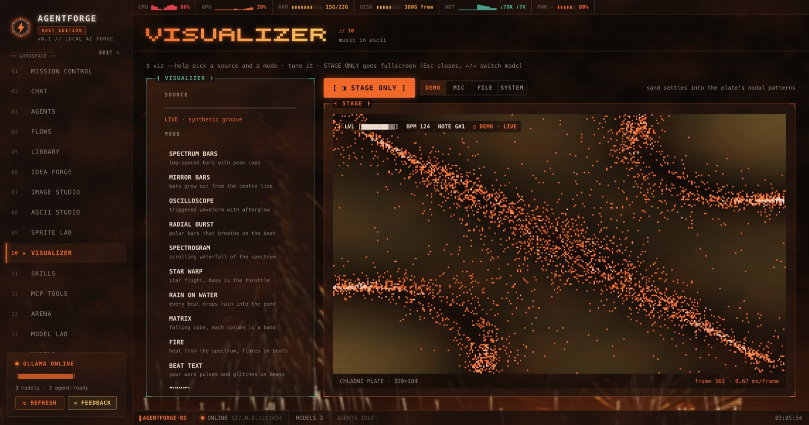
Chladni Plate: sand on a vibrating plate settles into the real nodal pattern of the strongest note, and re-forms when the note changes.
Visualizers simulated in Rust
Seventeen effects are written in Rust and compiled to WebAssembly. Six of them listen: Chladni Plate, Ferrofluid, Forge Hammer, Iron Filings, Murmuration and Molten Pour. A test showed Rust drawing every pixel was far slower than the graphics chip, so these simulate at a low resolution and scale up as crisp pixels, which keeps them smooth and suits the look. Each one doubles as a window background that moves on its own, or reacts to music if you switch that on. The audio can come from the microphone, a file, or the computer's own output, captured natively on all three systems.
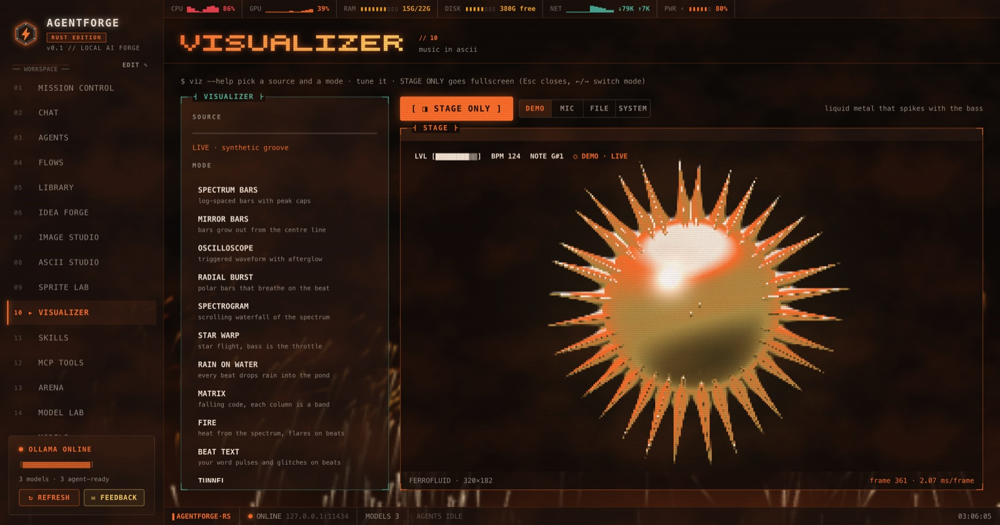
Ferrofluid: liquid metal that spikes with the bass.
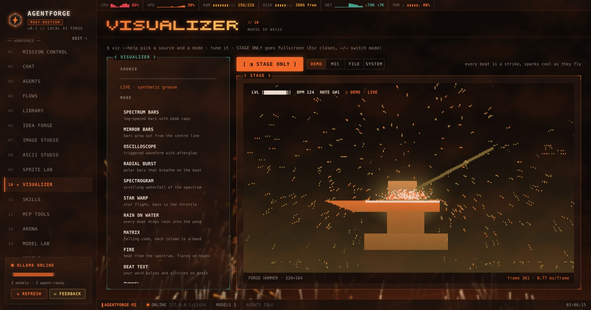
Forge Hammer: every beat is a strike, and the sparks cool as they fly.
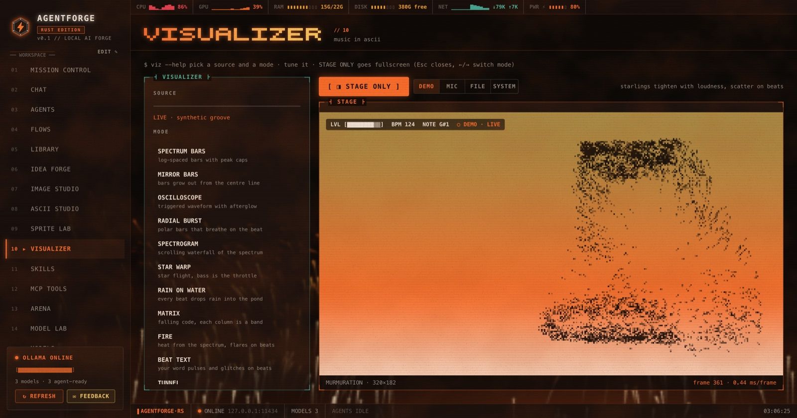
Murmuration: thousands of starlings that tighten with the volume and scatter on the beat.
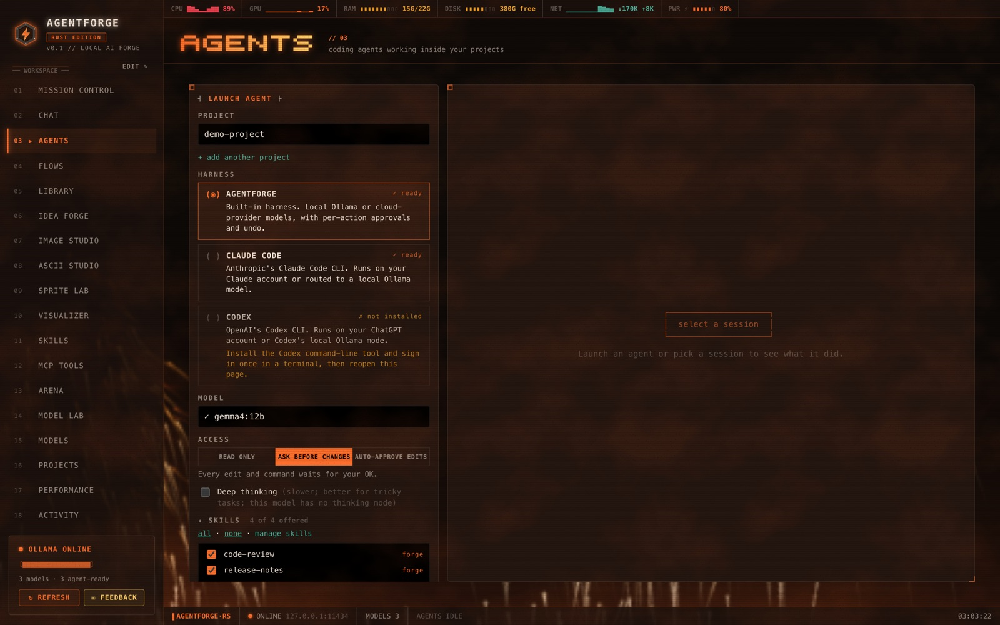
Agents: the same three harnesses and access levels as the Mac app.
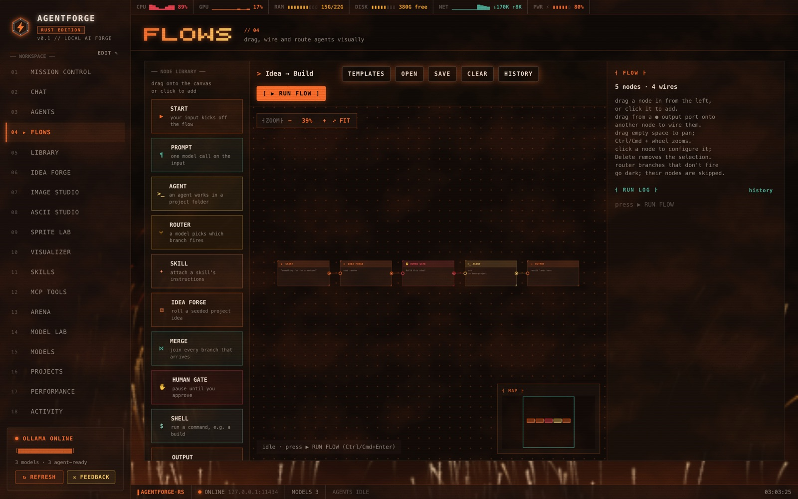
Flows, ported with all ten starter templates.
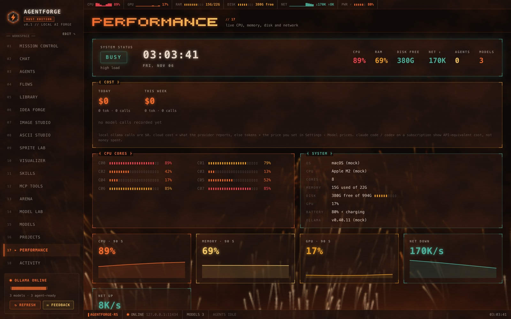
Performance, with today's and this week's spend.
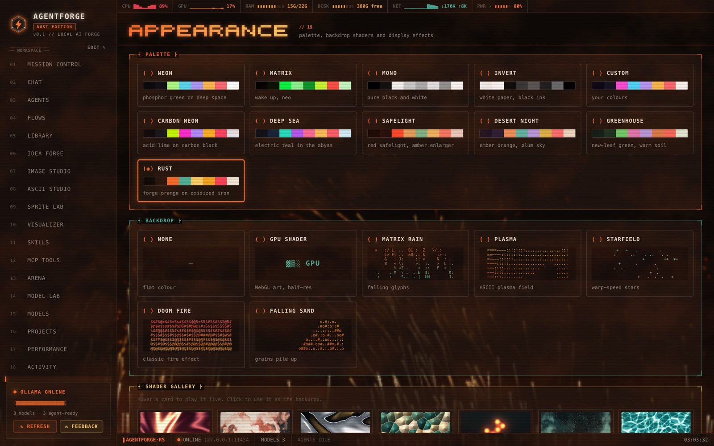
Appearance: eleven palettes, ASCII, shader and Rust backgrounds.
How it was built
Built with Claude Code in two days. One session planned the port and gave each feature its own folder in the code, then several builder agents worked in parallel on separate branches while it merged, tested and released them. Features I liked in one edition, like the cost tracker and the approvals queue, went into the Mac app first and were carried over once I had tried them. The interface screenshots here use the app's built-in demo data.
R-0404 / 10Reading tool
Argument X-ray
reading tool
Persuasive writing hides its structure. This tool maps a text into its thesis, claims, evidence, unstated assumptions and objections, then flags the weak links so you can see what is actually supported.
A clickable map of each text: thesis, reasons, evidence, unstated assumptions, objections and replies. Selecting a box highlights its passage, and selecting a passage selects its box.
A verdict with a grade, the weak points ranked by how serious they are, and suggested fixes. Typical findings are false dilemmas, one-off costs passed off as yearly ones, and contract clauses that conflict.
A rule-based scan beside it, so you can see what plain pattern matching catches and what takes real reading.
How it was built
Claude Code wrote the page, the sample texts and each analysis. The look is deliberately separate from this portfolio: a dark radiology light box, where the examples are plates and the fixes are recommendations.
R-0505 / 10Decision tool
Boardroom of One
decision tool
Ask one AI for advice and you tend to get one balanced, agreeable answer that hides the real disagreement. This tool seats five advisers with fixed temperaments and lets them argue your decision, then vote.
Five temperaments: Skeptic, Optimist, CFO, Future You and Contrarian, each with a different worldview.
Openings, cross-examination and a vote on a five-point scale, which you can replay turn by turn around an animated table.
The chair's resolution: the crux, the tradeoffs, when to say yes or no, and a first step for this week.
How it was built
Claude Code built the page and wrote the four example debates. It has its own look, an after-hours boardroom with a brass-nameplate table and a chair's resolution sealed in wax, so it reads as a separate product.
R-0606 / 10Local AI experiment
Small-model proof
local AI experiment
Can a free model that runs on a laptop pull the parties out of a lawsuit as well as Claude? And does training it on industry data make it better? One test on 100 real federal complaints answered both, and the second answer was no.
Experiment write-up
Federal complaints tested
100
Parties in the answer key
353
Parties found, Claude Sonnet
99.2%
Parties found, 4B model on a laptop
98.9%
Parties found, same model after training
91.5%
The question
Pulling every party out of a new complaint is the first step of a conflicts check, and a missed party is the expensive mistake. Law firms are told they need a private model trained on their own data. I wanted to know whether that is true for this task, on a normal MacBook, before anyone pays for it.
How it was tested
Real documents, real answers: public federal complaints from the RECAP archive. The answer key is each court docket's own party list, not labels written by an AI.
A held-out test: 100 complaints from many courts for the test, 220 others for training, with near-copies of test cases removed.
Three contenders, one prompt: Qwen3-4B run locally in 4-bit, the same model after LoRA training on the 220 complaints (about two hours), and Claude Sonnet.
What it showed
The untrained 4B model on a laptop found 98.9% of parties against Claude's 99.2%, a little noisier on precision (90% against 93%). Training made it worse at what matters: tidier, but it missed more parties, sometimes got stuck repeating one name, and learned the docket's habit of leaving out Doe defendants. For this task the value of a private model is privacy, a free offline model that never sends client documents anywhere at near-Claude accuracy, not training on industry data. Training should pay off on firm-specific work, and only with labels that list every party.
How it was built
Built with Claude Code on my M2 MacBook: Claude collected the complaints, built the splits, ran the training with Apple's MLX and scored all three models. I set the question and the rules of the test, including that the answer key could not come from an AI.
Zone 2
Research and history
Reference works and original research, including medical research.
R-0707 / 10Reference work
Byzantium
mosaic atlas
An illustrated encyclopedia of the Eastern Roman Empire, 324 to 1453, built around a mosaic atlas you can drag through 1,129 years and watch the borders move.
The atlas at 1025, near the empire's height. Every tile is a tessera; the panel says who was on the throne and who held what that year.
The atlas
Drawn as a mosaic
Territory is one fixed grid of tesserae, each slightly varied in shade, with grout between them. The empire is imperial purple edged in gold; the sea is blue tile. A Borders mode switches to clean outlines, and light and dark themes each have their own palette.
Conquest you can watch
When borders change, only the tiles that changed owner turn over, in a wave that starts from the conqueror's side, so territory is taken rather than repainted. Cities that change hands send out a ripple.
Built for scrubbing
Drag, click or use the keyboard; play at 1 to 50 years a second; or press Next change to jump to the next year the map moves. Ownership is cached per snapshot and neighbours precomputed, so fast scrubbing stays smooth.
Contested land stays contested
Overlapping claims of more than about 500 km² become hatched contested land instead of being handed to one side. Five places where the source disagrees with history, from Manzikert to 1453, are corrected and explained on the map.
Checked against the source
An automated check confirms zero invalid geometries and zero overlaps across all 200 snapshots, and ten key years match the source to within 1% of land area. Five other map sources were evaluated and rejected, each with a written reason.
More ways in
Compare two years side by side with a draggable divider, switch to a table of powers, toggle cities, battles and campaign routes, and share any view by its URL. Patterns stand in for colour, and reduced motion swaps flips for fades.
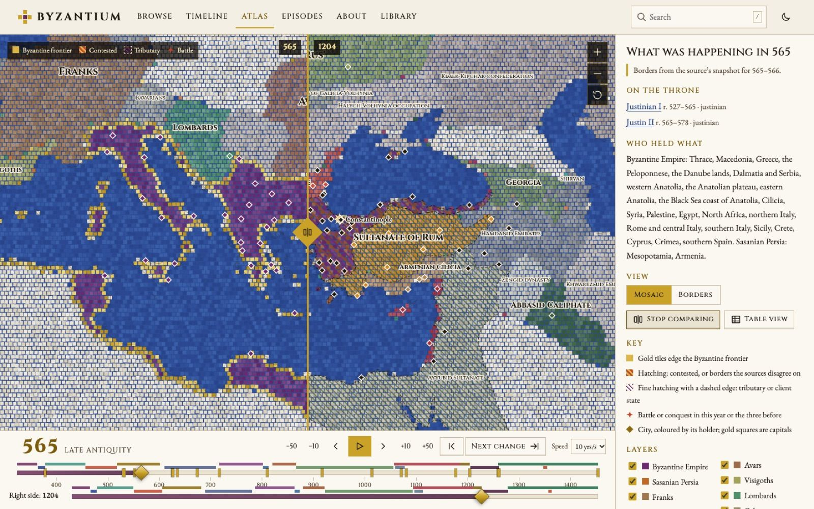
Compare mode: two years side by side with a divider you can drag or move by keyboard.
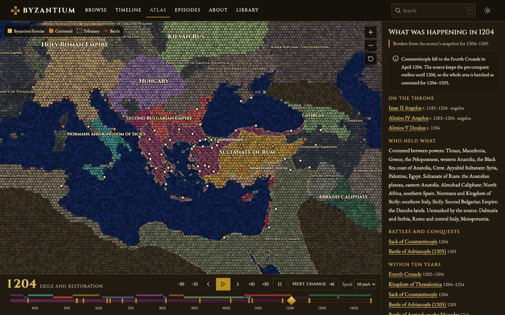
10251204
Drag the divider, or use the arrow keys, to go from 1025 to 1204. After the Fourth Crusade the empire's land is hatched as contested rather than simply recoloured.
The encyclopedia around it
464 entries pinned to fixed Wikipedia revisions with restored footnotes, plus 168 original introductions labelled as such.
1,174 Commons images with author and licence; 41 were left out because their licence couldn't be confirmed.
A guide to all 440 episodes of The History of Byzantium podcast. The build fails if any 12-word run matches the podcast's pages.
87 battle entries, a people index of 1,765, a gazetteer, coins, a primary-source reader for Procopius and Anna Komnene, and a timeline that shares its playhead with the atlas.
Built and verified
React, TypeScript and d3-geo, with Python pipelines for the map geometry: borders from the Seshat Cliopatria dataset, coastlines from Natural Earth, and 96 cities and 71 battles from Wikidata. It ships with 20 slider tests, 60 screenshot checks across phone and desktop, and Lighthouse mobile scores of 93 to 96.
How it was built
One long Claude Code session took it from an empty folder to a verified site. Claude evaluated map sources and their licences, built three data pipelines and the renderer, and wrote its own reports on what failed, what was skipped and where the sources disagree, for me to review.
R-0808 / 10Medical research
ME/CFS and Long COVID evidence map
medical research
Thousands of small studies have measured something in people with ME/CFS or Long COVID, and few results have been checked against each other. This project read the whole PubMed literature, pulled out every measured finding with its quote, and graded which ones independent labs have actually replicated.
Research write-up
Abstracts screened
15,923
Studies in the database
1,981
Findings, each with its source quote
7,337
Findings graded strong (ME/CFS / Long COVID)
17 / 33
Brain tissues enriched in the genetics test
11 of 13
The problem
ME/CFS has been studied for decades and Long COVID has added thousands of papers in a few years, but most studies are small and many contradict each other. Nobody had pulled the whole literature into one table that says which findings hold up across independent labs and which do not.
What it does
Extracts every finding from each abstract: what was measured, in whom, against which comparison group, and in which direction, with the sentence it came from.
Grades replication by lab, not by paper, so a group publishing the same cohort five times counts once. Replicated nulls are kept too, such as the 11 of 11 labs that found no XMRV.
Compares the two illnesses side by side. Both show the same circulation and exercise picture: a racing heart on standing, a lower stroke volume and reduced peak oxygen uptake.
Predictions written down first
The replicated findings suggested an immune, vascular and autonomic chain. Before opening any genetic data, the predictions were written down and locked with a file hash, then tested against the open DecodeME genome study with MAGMA gene-set and tissue analysis. The signal sat in the brain: 11 of 13 brain tissues and the pituitary were enriched, which agrees with what the DecodeME team reported themselves.
How it was built
Built with Claude, under my direction, across several long Claude sessions. Claude wrote the search and grading code, ran the extraction in batches of 100 abstracts, audited its own output and ran the genetics pipeline. I directed the work and made the calls along the way, including writing the genetics predictions down before the test.
R-0909 / 10Patient tool
Clear Aftercare
patient tool
Discharge papers are written in abbreviations and handed to people who are tired, unwell or 80 years old. Paste them in and get a plain-language care sheet plus a calendar reminder for every dose, task and appointment, with anything unclear marked instead of guessed.
Try the demoThe example and calendar buttons work on this site; reading new instructions runs inside Claude
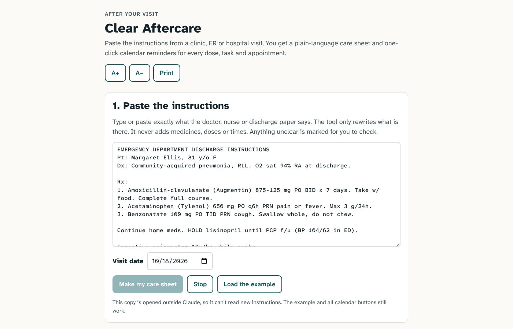
The input: an emergency department discharge for an 81-year-old with pneumonia, as it would be printed.The care sheet. Eleven gaps, such as "2 times a day" with no clock times, are marked for the patient to fill in or ask about.
What it does
Rewrites, never adds. Abbreviations become plain words, but the prompt forbids adding any medicine, dose, time, duration or advice that is not on the paper.
Flags the gaps: twice a day with no times, a dose in mg with no pill strength, "continue home meds" with no list, a follow-up nobody booked.
Turns on reminders only when they are complete. Calendar buttons switch on once times, start date and number of days are set, with one-click presets such as 8 AM and 8 PM.
Built for the reader: a large-text toggle, a dose checklist, a print view and a rough reading-grade score.
How it was built
Built with Claude as a single page that calls Claude to read the instructions. Claude wrote the page, the prompt, the calendar files and the example, and checked prior work in the field, under my direction.
R-1010 / 10Medical evidence check
Trauma guideline citation audit
evidence check
Change here for Citation Gate on the Legal line. Both check whether a cited source says what it is cited for: court opinions in one, medical papers in the other.
Military trauma guidelines tell medics and surgeons what to do, and each recommendation cites a paper. This audit checked whether the cited papers say what the guidelines claim, and found reference lists whose numbers had slipped out of line.
Research write-up
What it found
Shifted reference numbers. In the pain, anxiety and delirium guideline, 24 of 27 wrong-topic citations fit the entry two numbers later, so the in-text numbers look keyed to a different list. The TBI neurosurgery guideline shows a shift of one in its later references.
Smaller slips elsewhere: two swapped references in one guideline and a reference reused for every cross-reference in another.
56 specific citations are listed for a person to confirm by opening the PDF and reading the two entries.
Decisions behind it
Lead with what anyone can check. A shifted reference number is verifiable in minutes, so it is the headline, not a subjective "does this paper support it" grade.
Distrust the big number. AI grading flagged about 38% of citations as unsupported, but that fell to 18% when the full paper was available instead of the abstract, so it is reported as a likely overestimate.
Second opinion, labelled as such. ChatGPT re-graded 150 items and agreed closely with Claude (kappa 0.76).
How it was built
Built with Claude under my direction. Claude downloaded the guidelines, extracted every cited statement, matched each reference to PubMed, graded support and ran the reference-shift test; ChatGPT did the second-model check. The result is a list of specific, correctable errors in these guidelines.